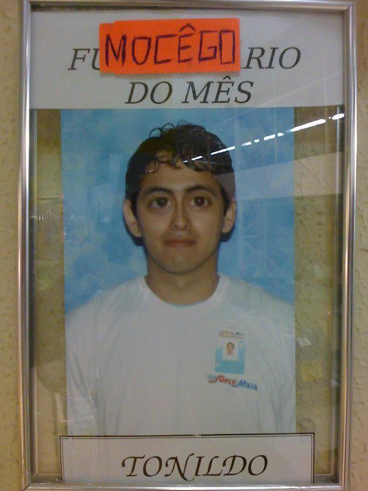

Sobre Mim
Olá! Eu sou Tonildo Alves - Ceo do Grupo Alves Aragão.
Hobbies: Adoro mexer em codigos, ver como funciona dentro do sistema, esse negocio de pegar tudo mastigado nã é comigo. Uma area que me deixa curioso.
Musica que me faz chorar: … Mais um fim de semana, os bares lotados E eu tentando ligar Meus amigos ligando, e eu aqui te esperando E você onde está? … Eu tenho aqui na minha frente o seu rosto Vejo a tua boca mas não posso te beijar O teu olhar fixamente me vigia De uma fotografia … Eu coloquei a melhor roupa pra te ver Mudei meu corte de cabelo pra te impressionar Mas já saquei que nesta noite vai chover Bem no meu olhar … Só preciso de um olá, ou alô, ou coisa assim Porque assim eu vou saber o que eu 'to fazendo aqui Imprevistos acontecem, meu coração não te esquece Faça o seu lembrar de mim … Só preciso de um olá, ou alô, ou coisa assim Porque assim eu vou saber o que eu 'to fazendo aqui Imprevistos acontecem, meu coração não te esquece Faça o seu lembrar de mim … Só preciso de um olá, ou alô, ou coisa assim Porque assim eu vou saber o que eu 'to fazendo aqui Imprevistos acontecem, meu coração não te esquece Faça o seu lembrar de mim … Só preciso de um olá, ou alô, ou coisa assim Porque assim eu vou saber o que eu 'to fazendo aqui Imprevistos acontecem, meu coração não te esquece Faça o seu lembrar de mim … Faça o seu lembrar de mim Faça o seu lembrar de mim
Essa é pra amolecer seu coraçao avaliador: ...........Sabe, quanto tempo não te vejo Cada vez você distante Mais eu gosto de você Por quê? Sabe, eu pensei que fosse fácil Esquecer seu jeito frágil De se dar sem receber Só você Só você que me ilumina Meu pequeno talismã Como é doce essa rotina De te amar toda manhã Nos momentos mais difíceis Você é o meu divã Nosso amor não tem segredos Sabe tudo de nós dois E joga fora nossos medos Vai, saudade, diz pra ela Diz pra ela aparecer Vai, saudade, vê se troca A minha solidão por ela Pra valer o meu viver Só você que me ilumina Meu pequeno talismã Como é doce essa rotina De te amar toda manhã Nos momentos mais difíceis Você é o meu divã Nosso amor não tem segredos Sabe tudo de nós dois E joga fora nossos medos Vai, saudade, diz pra ela Diz pra ela aparecer Vai, saudade, vê se troca A minha solidão por ela Pra valer o meu viver Vai, saudade, diz pra ela Diz pra ela aparecer Vai, saudade, vê se troca A minha solidão por ela Pra valer o meu viver
Formação Educacional
- Informatica Basica - Realizado a bilhoes de anos atrás
- Tecnico em Telecomunicações - Realizado na Escola Tecnica de Brasilia
- Analise e Desenvolvimento de Sistemas - Atualmente em formaçao acadêmica.
Idiomas
- Português do dia a dia
- Inglês - Modulo Fraudinha Kids